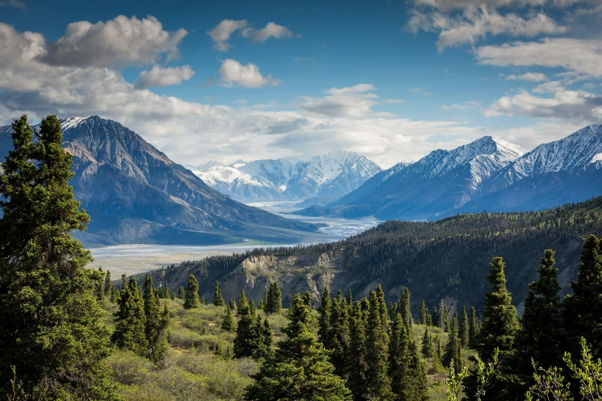

The great outside
ATMOSPHERE / 08 SECSlow movement, spacious titles, and a cinematic frame.
I'm Muhammad Anas Ibrahim.
Video editing. Motion design. Every detail considered.

Five original web motion studies.
Different moods. One attention to detail.
Created with AI assistance for this website using stock photography and browser animation. These are illustrative web demos, not client work or examples of my Adobe edits.
Slow movement, spacious titles, and a cinematic frame.
A faster rhythm, bold titles, and the city after dark.
A controlled camera move and a minimal campaign treatment.
Quiet typography and an intimate portrait composition.
A graphic title study exploring scale, contrast, and movement.
Anas Ibrahim.
Back to creating.
I completed multiple editing projects before taking a break in 2024. I'm now returning to editing with expertise in Adobe After Effects and Premiere Pro, and looking for my next opportunity.
My earlier projects are no longer available. This site brings together my background and new website motion studies while I build a fresh collection of edited video samples.